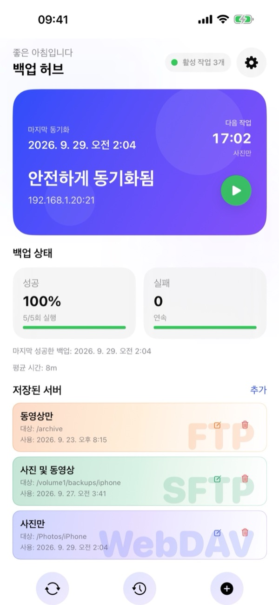
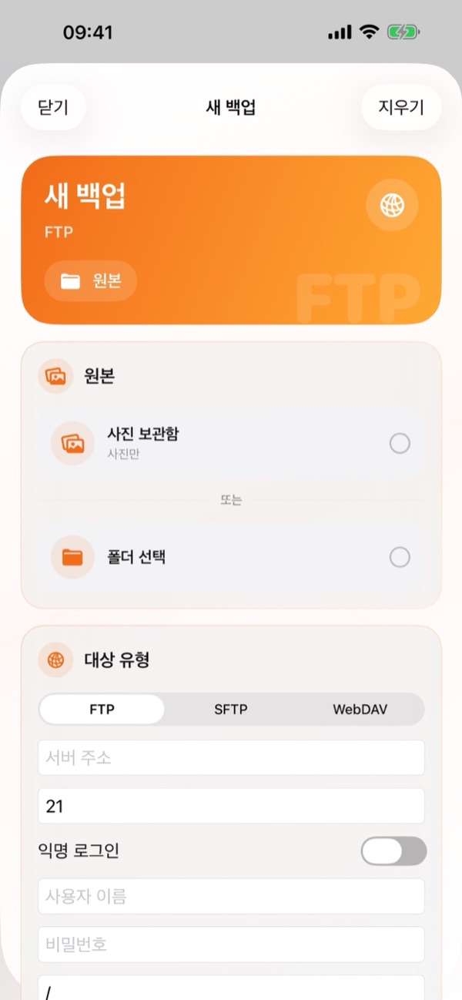
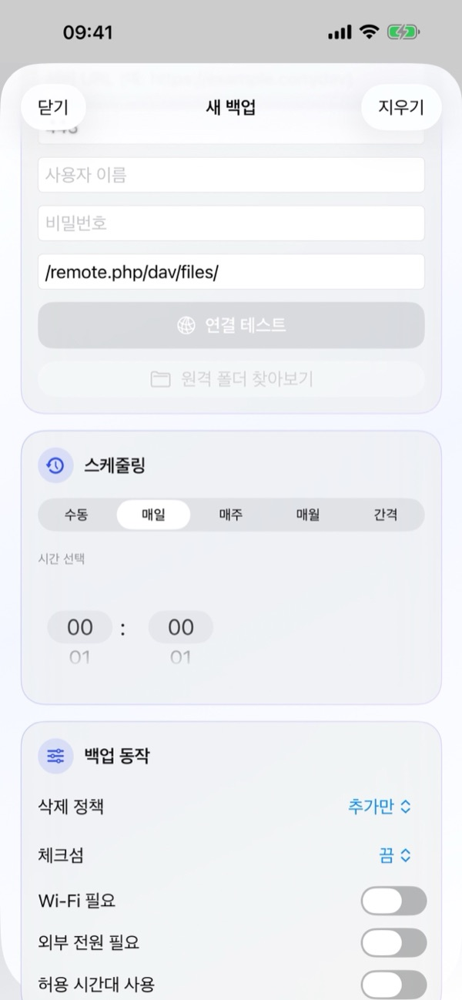
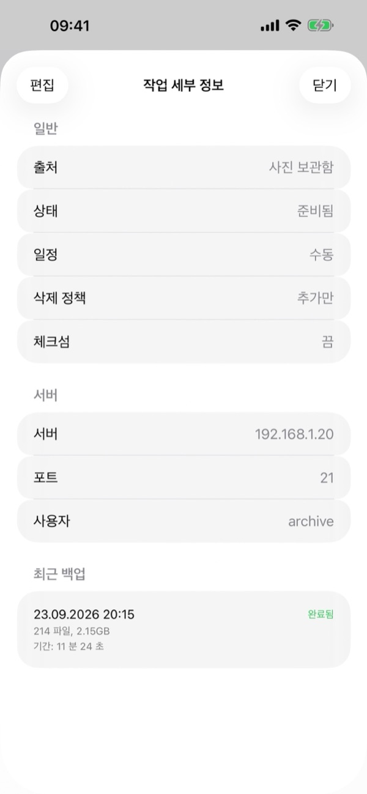
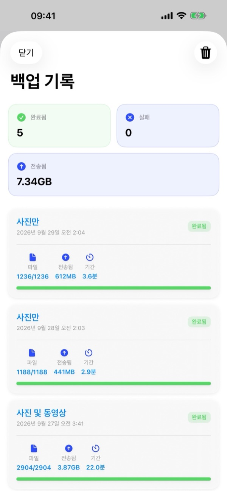
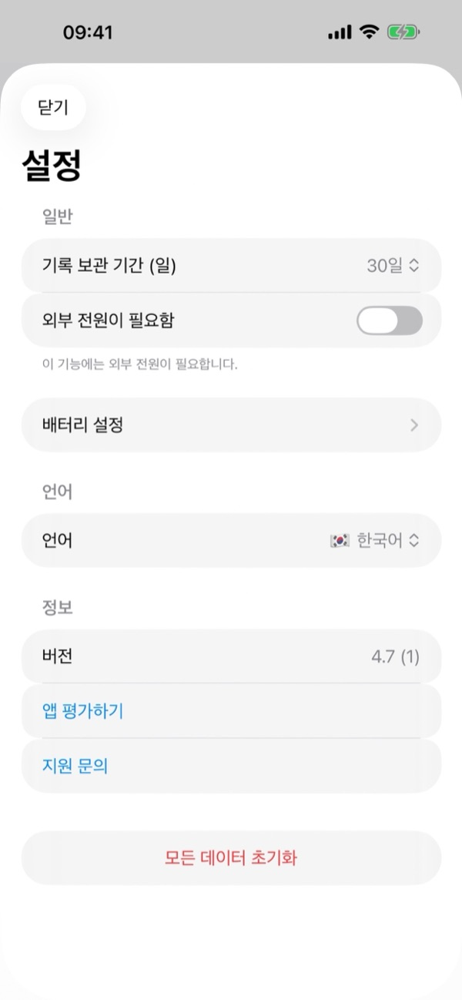

1. 준비할 것
- 호환 서버: FTP, SFTP(SSH) 또는 WebDAV(HTTP/HTTPS)를 지원하는 NAS(Synology, QNAP, TrueNAS, Unraid), 홈 서버 또는 개인 클라우드(Nextcloud, ownCloud, WebDAV).
- 접속 정보: 서버 주소, 포트 번호(기본값: FTP 21, SFTP 22, WebDAV 443/80), 사용자 이름 및 비밀번호(FTP는 익명 로그인 지원).
- iOS 권한: 사진 전체 접근 권한, 홈 네트워크 서버 연결을 위한 로컬 네트워크 권한, 알림 권한.
2. 백업 허브 둘러보기
앱을 열면 백업 허브에서 전체 백업 상태를 한눈에 확인할 수 있습니다:
- 상태 배너: 마지막 동기화 시각, 다음 작업 예정 시각, 현재 보호 상태, 활성 서버 주소 및 즉시 백업을 시작하는 초록색 실행(▶) 버튼을 표시합니다.
- 백업 상태(Health): 성공률(퍼센트 및 실행 횟수), 연속 실패 횟수, 마지막 성공 일시 및 평균 소요 시간을 보여줍니다.
- 저장된 서버: 설정된 모든 FTP, SFTP, WebDAV 작업 카드를 보여주며, 빠른 편집(✏️) 및 삭제(🗑️) 아이콘을 제공합니다. 카드를 탭하면 작업 상세 화면이 열립니다.
- 하단 바 및 설정: 화면 하단의 버튼 3개로 동기화/실행(🔄), 백업 기록(🕒) 열기, 새 백업(+) 만들기를 실행할 수 있습니다. 오른쪽 상단의 톱니바퀴(⚙️) 아이콘은 설정을 엽니다.

3. 새 백업 만들기
백업 허브 하단의 + 버튼(또는 저장된 서버 옆의 추가)을 탭해 새 백업 화면을 엽니다:
- 원본: 사진 보관함(사진만, 동영상만, 또는 사진 및 동영상)을 선택하거나 폴더 선택을 탭해 iOS 파일 앱의 폴더를 선택합니다.
- 대상 유형: FTP, SFTP 또는 WebDAV를 선택합니다. 서버 주소, 포트, 사용자 이름, 비밀번호 및 원격 경로(예:
/remote.php/dav/files/)를 입력합니다. 연결 테스트로 확인한 뒤 원격 폴더 찾아보기로 대상 폴더를 지정할 수 있습니다. - 스케줄링: 수동, 매일, 매주, 매월 또는 간격 중에서 선택하고 시간 선택에서 실행 시각을 지정합니다.
- 백업 동작: 삭제 정책, 체크섬 및 실행 조건을 설정한 뒤 작업을 저장합니다.
첫 전체 백업이 완료된 후에는 새로 추가되거나 변경된 파일만 전송하므로 다음 백업이 훨씬 빠릅니다.


4. 작업 상세 및 관리
저장된 서버에서 카드를 탭하면 작업 상세 화면이 열립니다:
- 일반: 원본, 현재 상태(예: 준비됨), 스케줄, 삭제 정책 및 체크섬 설정을 확인합니다.
- 서버: 서버 주소, 포트, 사용자 계정을 확인합니다.
- 최근 백업: 해당 작업의 최근 실행 기록(날짜, 완료 여부, 파일 수, 용량, 소요 시간)을 보여줍니다.
- 왼쪽 상단의 편집을 탭해 언제든 설정을 수정할 수 있습니다.

5. 스케줄링 및 실행 조건
스케줄링에서 수동, 매일, 매주, 매월, 간격 중 하나를 고르고 시간 선택으로 실행 시각을 정합니다.
백업 동작에서 자동 백업이 실행될 조건을 지정할 수 있습니다:
- Wi-Fi 필요: 모바일 데이터를 절대 사용하지 않습니다.
- 외부 전원 필요: iPhone이 충전 중일 때만 실행됩니다.
- 허용 시간대 사용: 지정한 시간대(예: 심야 시간)에만 자동 백업을 허용합니다.
- 최소 배터리 잔량(설정 › 배터리 설정): 배터리가 기준치보다 낮으면 백업을 건너뜁니다.
6. 삭제 정책, 체크섬 및 iCloud
백업 동작에서 iPhone에서 삭제한 파일의 처리 방식과 파일 무결성 검사를 설정합니다:
- 삭제 정책 › 추가만
- 서버의 파일을 절대 삭제하지 않습니다. 백업 후 iPhone 저장 공간을 확보하기 위해 사진을 지울 계획이라면 반드시 이 옵션을 선택하세요.
- 삭제 정책 › 미러
- 서버 폴더를 iPhone 원본과 똑같이 유지합니다. iPhone에서 삭제한 파일은 서버에서도 삭제됩니다.
- 삭제 정책 › 보관 후 삭제
- 삭제된 파일을 영구 삭제하지 않고 서버의 날짜별 .backupflow_archive 폴더로 이동합니다.
- 체크섬 (Checksum)
- 업로드 후 모든 파일이 손상 없이 도착했는지 확인합니다(최대 속도를 위해 기본값은 끔).
iCloud 사진 팁: iCloud 사진을 사용 중이라면 필요한 경우 iCloud 항목 다운로드를 켜서 iCloud에만 보관된 원본 사진과 동영상도 빠짐없이 백업하세요.
7. 백그라운드 백업
BackupFlow는 iOS BGTaskScheduler와 연동되어 예약된 백업을 실행합니다. iOS가 배터리 및 기기 사용 패턴에 따라 백그라운드 실행 시점을 조율하므로 지정한 시각보다 조금 뒤에 시작되거나 알림을 보낼 수 있습니다.
iOS가 백그라운드 전송을 일시 중지하더라도 앱을 열면 자동으로 이어서 진행되며, 이미 전송된 파일은 건너뜁니다. 첫 대용량 백업 시에는 Wi-Fi와 충전기에 연결해 두세요.
8. 백업 기록
백업 허브 하단 바 가운데의 기록(🕒) 버튼을 탭해 백업 기록을 엽니다:
- 요약 카드: 상단에서 총 완료 횟수, 실패 횟수 및 누적 전송 용량(GB/MB)을 확인합니다.
- 상세 실행 기록: 각 항목에 작업 이름, 날짜 및 시간, 완료 배지, 전송된 파일 수(예:
1236/1236), 용량 및 소요 시간이 표시됩니다. 오른쪽 상단의 휴지통(🗑️) 아이콘으로 기록을 지울 수 있습니다.

9. 앱 설정
백업 허브 오른쪽 상단의 톱니바퀴(⚙️) 아이콘을 탭해 설정을 엽니다:
- 기록 보관 기간(일): 백업 기록을 보관할 일수를 선택합니다(예: 30일).
- 외부 전원 필요 및 배터리 설정: 전체 전원 조건 및 최소 배터리 잔량을 설정합니다.
- 언어: 지원하는 12개 언어 중 원하는 언어로 앱 인터페이스를 즉시 변경합니다.
- 정보: 앱 버전 확인, 앱 평가하기, 지원 문의를 제공합니다.
- 모든 데이터 초기화: 이 기기에서 모든 작업, 기록 및 저장된 비밀번호를 삭제합니다. 서버에 저장된 파일은 건드리지 않습니다.

10. 문제 해결
- 서버에 연결할 수 없습니다.
- 주소, 포트(FTP 21, SFTP 22, WebDAV 443/80), 사용자 이름과 비밀번호를 확인하세요. 홈 서버의 경우 같은 Wi-Fi에 연결되어 있는지, iPhone 설정 › 개인정보 보호 및 보안 › 로컬 네트워크 › BackupFlow 권한이 켜져 있는지 확인하세요.
- 예약된 백업이 실행되지 않았습니다.
- 백업 동작 조건(Wi-Fi, 외부 전원, 허용 시간대, 배터리)과 알림 허용 여부를 확인하세요.
- 일부 사진이 누락되었습니다.
- 사진 '전체 접근' 권한을 허용하고 필요한 경우 iCloud 항목 다운로드를 켜세요.
- 서버에서 파일이 사라졌습니다.
- 작업의 삭제 정책을 미러에서 추가만 또는 보관 후 삭제로 변경하세요.
- SFTP 보안 경고가 표시됩니다.
- 서버의 SSH 지문이 변경되었습니다. 서버를 재설치하거나 교체했다면 정상이며, 그렇지 않다면 서버 관리자에게 문의하세요.
11. 개인정보 보호 및 보안
모든 파일은 iPhone에서 사용자의 서버로 직접 전송됩니다. BackupFlow는 자체 클라우드 서버를 운영하지 않으며, 파일을 열람하거나 어떠한 분석·추적 데이터도 수집하지 않습니다. 비밀번호는 iOS 키체인(Keychain)에 안전하게 암호화되어 저장됩니다. 자세한 내용은 개인정보 처리방침을 참고하세요.
12. 도움이 필요하신가요?
앱 내 설정 › 지원 문의를 탭하거나 tamersavasci@icloud.com으로 이메일을 보내 주세요. 앱 버전과 기기 모델이 자동으로 포함됩니다.